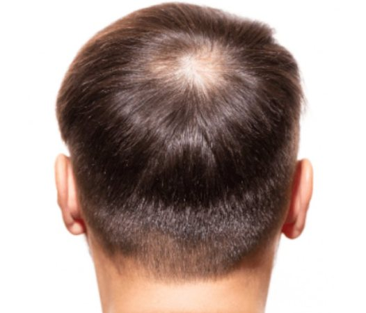
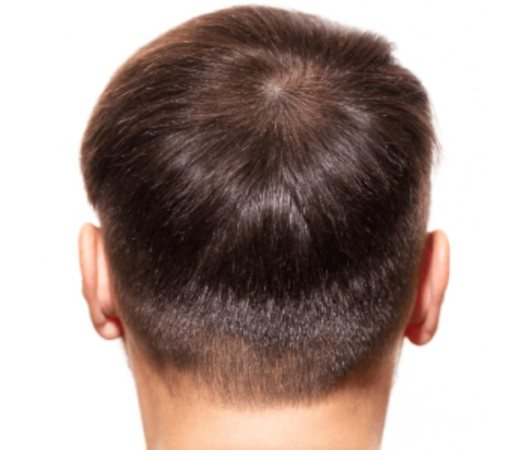
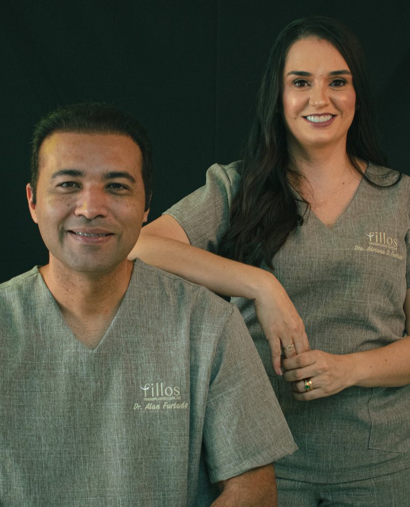
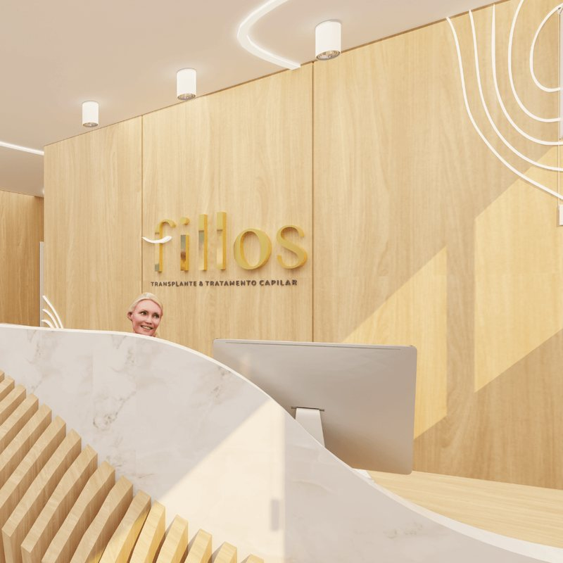
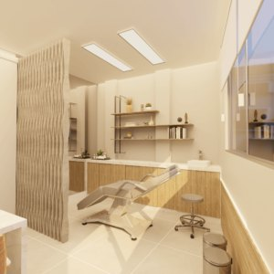

Resultados naturais:
O transplante capilar utiliza folículos capilares saudáveis para restaurar o cabelo perdido. Isso garante resultados naturais e duradouros.
Clínica especializada em transplante capilar
O transplante capilar utiliza folículos capilares saudáveis para restaurar o cabelo perdido. Isso garante resultados naturais e duradouros.
O transplante capilar é um procedimento minimamente invasivo, com recuperação rápida. Os pacientes podem voltar para casa no mesmo dia e retomar suas atividades habituais em poucos dias.
O transplante capilar é um procedimento seguro, realizado por médicos especialistas.
O transplante capilar utiliza folículos capilares saudáveis para restaurar o cabelo perdido. Isso garante resultados naturais e duradouros.
O transplante capilar utiliza folículos capilares saudáveis para restaurar o cabelo perdido. Isso garante resultados naturais e duradouros.
O transplante capilar utiliza folículos capilares saudáveis para restaurar o cabelo perdido. Isso garante resultados naturais e duradouros.
Antes do transplante capilar, é necessário realizar alguns exames e procedimentos para garantir a segurança do paciente. Após o transplante, é importante seguir as orientações médicas para garantir uma recuperação rápida e eficaz.


Presença exclusiva da Fillos na Band
Somos uma clínica especializada em transplante capilar, localizada em Taubaté - SP. Oferecemos um atendimento personalizado para cada paciente, com o objetivo de resgatar a autoestima e a qualidade de vida.

Conheça a Fillos
